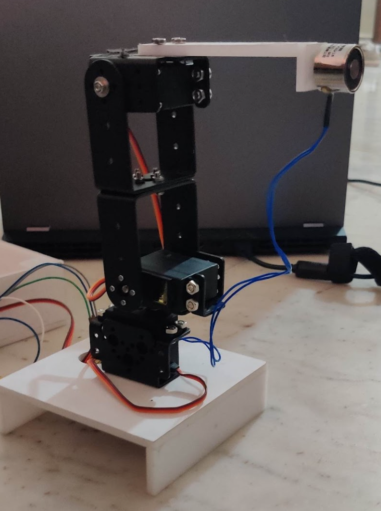
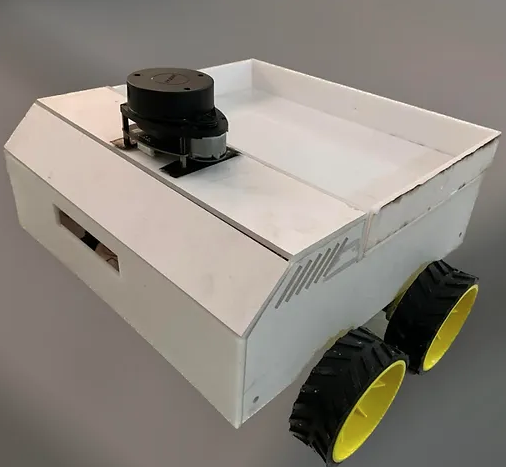
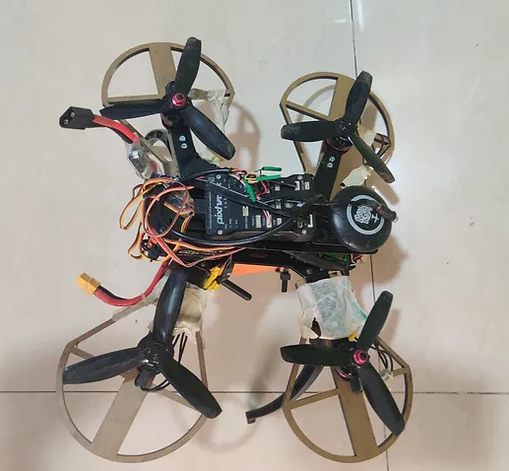

3-DOF Robotic Manipulator
 Segregation at source is critical to its recycling and disposal. Lack of segregation, collection and transportation of unsegregated mixed waste to the landfills has an impact on the environment. When we segregate waste, it reduces the amount of waste that reaches landfills, thereby taking up less space. Pollution of air and water can be considerably reduced when hazardous waste is separated and treated separately. It is essential that waste is put in separate bins so that it can be appropriately dealt with. Hence, we made a 3-DOF robotic manipulator that will help segregate magnetic waste on garbage landfill sites by picking up magnetic waste from the incoming conveyor belt so that it does not go on for further processing along with the other recyclable waste and cause pollution in the environment.
Mobile Surveillance Robot
 In this project, my focus was on exploring the capabilities of ROS (Robot Operating System) for practical robotics applications. Utilizing ROS’s flexible framework, I successfully integrated Lidar and a webcam for real-time video feedback on the robot. This setup was complemented by a robust remote control system, established through a Master-Slave configuration between the robot and my base computer.
The core of the robot’s mobility was managed via the ‘/cmd_vel’ topic, with the base station transmitting velocity commands that the robot subscribed to. I harnessed the ‘rosserial_python’ package to bridge ROS with an Arduino Mega, translating these commands into PWM (Pulse Width Modulation) signals to drive the DC motors.
For visual feedback, I implemented the ‘video_streamer_opencv’ package within ROS, enabling live video streaming capabilities. Additionally, the project included sophisticated indoor mapping functionalities. By integrating ‘rplidar_ros’, ‘hector_slam’, and ‘map_server’ packages, I was able to generate and store detailed maps of indoor environments, showcasing the full extent of ROS’s versatile applications in robotics.
Remote-Controlled Aerial Surveillance Drone

Together with two other friends, I embarked on a project to delve into the intricacies of drone technology. Our goal was to custom-build a tele-operated surveillance drone, tailored for outdoor monitoring. This collaborative effort was driven by our shared curiosity to explore the various aspects and capabilities of drone engineering.